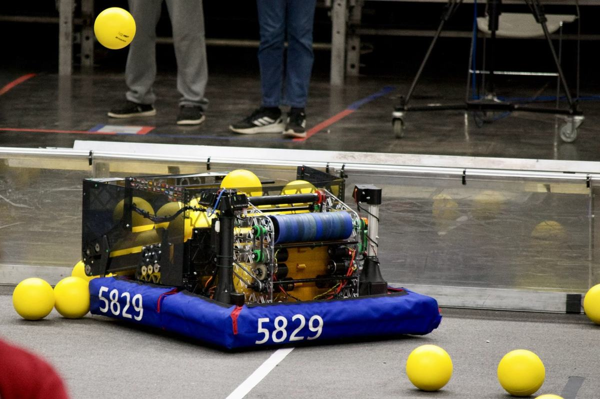
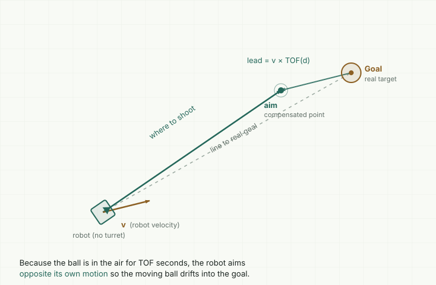

Shoot-on-the-move
A targeting system that lets our turretless robot score while it drives, instead of stopping to line up every shot. In testing it scored on more than 90% of shots taken while moving.

The problem
In the 2026 FRC game, our robot scores by launching foam balls into a funnel-shaped goal. Shooting while stationary is the baseline. The hard version is shooting while moving toward the next objective, which saves a cycle of stopping, squaring up and re-accelerating every time. It is harder for us because our robot has no turret. The whole chassis has to point the shot, so the aiming math and the driving are coupled.
The idea
The ball spends real time in the air. It leaves the shooter carrying the robot’s velocity, so if I aim straight at the goal while driving, the shot drifts off by velocity times flight time. Instead of aiming at the goal, I aim at a compensated point, offset from the goal in the direction opposite the robot’s motion. The moving ball then carries itself into the real goal.

v × TOF, opposite the direction of travel.Measuring the real world
Two quantities depend on distance: how fast to spin the flywheels (RPM) and how long the ball stays in the air (time of flight). Rather than derive them from theory and fight every real-world variable, I measured them. I recorded shots at known distances, timed the flights with my phone, and built two interpolating lookup tables from the data, which fill in the distances between the points I sampled.
public final static InterpolatingDoubleTreeMap TOF =
new InterpolatingDoubleTreeMap();
static {
for (var e : List.of(
Pair.of(Meters.of(2), Seconds.of(0.85)),
Pair.of(Meters.of(4), Seconds.of(1.13)),
Pair.of(Meters.of(6), Seconds.of(1.49)),
Pair.of(Meters.of(8), Seconds.of(1.85)),
Pair.of(Meters.of(10), Seconds.of(2.21)),
Pair.of(Meters.of(12), Seconds.of(2.57))))
{ TOF.put(e.getFirst().in(Meters), e.getSecond().in(Seconds)); }
}The iterative solver
Here is the catch that makes this interesting. The lead depends on the flight time, the flight time depends on the distance to the target, and the target is the compensated point I am trying to find. The unknown is on both sides. I solve it by fixed-point iteration: start by aiming at the real goal, compute the flight time for that distance, move the aim point, and repeat. It settles in two or three passes.
/** Virtual goal that compensates for robot velocity, so the
* robot aims ahead of the real goal while moving. */
public Pose2d getDynamicHubLocation() {
Translation2d hub = Constants.getHubPose2D().getTranslation();
Translation2d vel = getFieldVelocity(); // robot velocity
Translation2d aim = hub;
for (int i = 0; i < 15; i++) { // settles in ~2-3
double dist = aim.minus(robotPos).getNorm();
double tof = Constants.TOF.get(dist); // measured lookup
aim = hub.minus(vel.times(tof)); // lead the goal
}
return new Pose2d(aim, new Rotation2d());
}
The robot then aims at aim instead of hub, and both the flywheel RPM and the
flight time are read from the same compensated distance so the model stays consistent. This works
whether the robot is moving toward, away from or sideways to the goal.
Seeing it work
In test sessions at Katy and at Awty, the robot scored on more than 90% of the shots it took while moving. The pattern in the misses turned out to be the more useful result.
What still misses, and what’s next
The misses cluster around sudden changes in direction. That is not a flaw in the solver. It comes from an assumption in the model: that the robot’s velocity stays constant over the ball’s whole flight. When the robot accelerates or reverses, the ball has already left the shooter carrying the old velocity, and no aiming math can save a shot that is already in the air.
So the fix is not to solve harder. Newton’s method would converge faster and more cleanly than fixed-point iteration, but the real gains are in modeling acceleration and accounting for the delay between deciding to shoot and the ball actually leaving.
Next I want to try the Newton’s method approach from the FRC documentation’s write-up on dynamic shooting, and test whether a short latency-compensation term cuts the misses on direction changes.
What I took from it
This started as a classroom idea, that horizontal and vertical motion are independent, and turned into a system that runs on a real robot. The most useful lesson was learning to tell a convergence problem apart from a modeling problem, because they have completely different fixes.